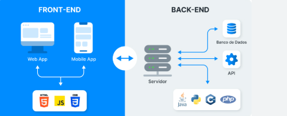

Bem-vindo ao Guia sobre Frameworks
Entenda tudo sobre Frameworks
Explorar

Introdução
Os frameworks surgem como ferramentas essenciais no desenvolvimento de software, pois oferecem estruturas reutilizáveis e padronizadas que reduzem retrabalho, agilizam entregas e aumentam a qualidade e a manutenibilidade das aplicações.
O que é um Framework
Um framework é uma estrutura de suporte ao desenvolvimento de software, baseada na Programação Orientada a Objetos, que oferece componentes reutilizáveis e um esqueleto pronto a ser adaptado ao projeto. Diferencia-se das bibliotecas por aplicar a Inversão de Controle.
Vantagens
- Reutilização de código: Aproveitamento de componentes prontos e testados.
- Eficiência: Aceleração do desenvolvimento por meio de estruturas pré-definidas.
- Segurança: Proteção integrada contra ataques comuns.
- Padronização: Maior consistência do código e facilidade de manutenção.
Conclusão
A utilização de frameworks permite que o desenvolvedor foque na regra de negócio, deixando a estrutura base para ferramentas consagradas no mercado.